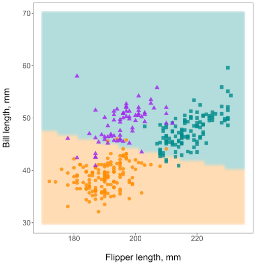
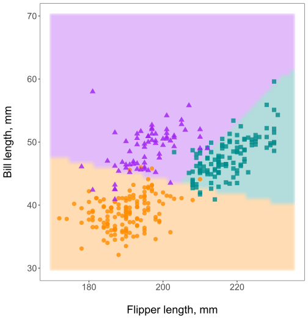
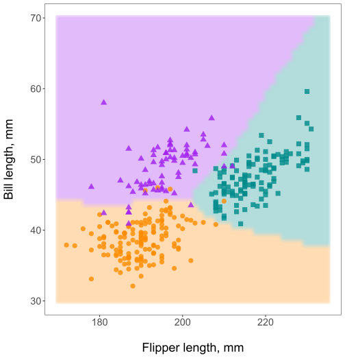
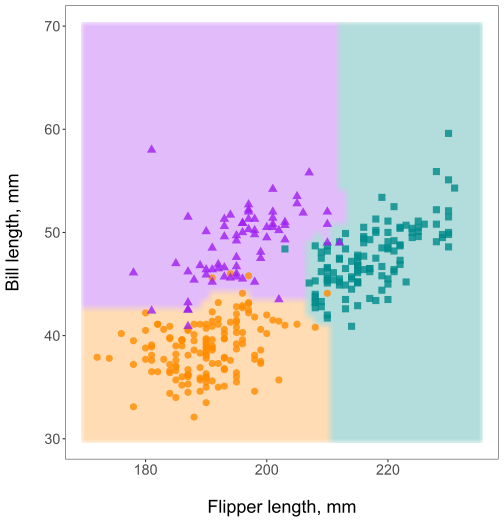
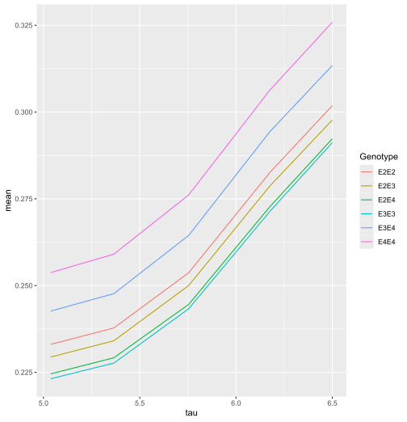
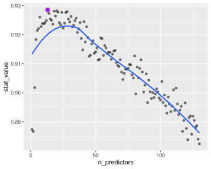

Oblique random forests with aorsf
MELODEM data workshop
Overview
What does oblique mean?
aorsfMotivation
Design
Benchmarks
Applications
What does oblique mean?
Background
Axis-based splits (left) and oblique splits (right)

Oblique tree: first split
First, split mostly by bill length
Oblique tree: second split
First, split mostly by bill length
Second, make a triangle for the gentoo.

Oblique random forests
Aggregating randomized trees gives the oblique random forest

Surprisingly different!
Despite very many similarities, axis-based and oblique random forests may give different results.

Prior benchmarks
Breiman (2001) found oblique random forests compared more favorably to boosting than axis based ones.
Menze et al. (2011) coined the term ‘oblique’ random forest and introduced variable importance metrics for it.
On benchmarking 190 classifiers on 121 public datasets, Katuwal, Suganthan, and Zhang (2020) found variations on the oblique random forests were the top 3 classifiers.
Yet, everyone uses axis-based random forests. Few people even know that oblique random forests exist.
Here’s why:


aorsf
accelerated oblique random (survival) forest
What is the problem?
Oblique random forests are slow. How slow, you ask?
library(ODRF)
library(ranger)
library(microbenchmark)
microbenchmark(
ODRF = ODRF(species ~ bill_length_mm + flipper_length_mm,
data = penguins,
ntrees = 500),
ranger = ranger(species ~ bill_length_mm + flipper_length_mm,
data = penguins,
num.trees = 500),
times = 5
)Unit: milliseconds
expr min lq mean median uq max neval cld
ODRF 4651.9503 4757.0415 4779.5978 4789.0610 4845.8683 4854.0679 5 a
ranger 20.2193 20.7901 23.5078 21.8179 23.3712 31.3405 5 bWhy so slow?
Suppose we’re given \(p\) continuous predictors, each with \(k\) unique values.
If predictor has \(k\) unique values \(\Rightarrow\) max \(k-2\) potential splits
At most, \(p \cdot (k-2)\) axis-based splits to assess
Suppose we assess \(L\) linear combinations of predictors:
- At most, \(L \cdot (k-2)\) oblique splits to assess
Usually, \(L \gg p\) to find good oblique splits
Find 1 good linear combination?
What if we use a method like regression to find \(L=1\) linear combination?
\[\text{Time to assess an oblique split }= R + S\]
Where
\(R\) is time to fit regression
\(S\) is time to assess up to \(k-2\) splits
If \(R\) is small, we can do okay with this!
But \(R\) is not small
It takes \(\approx\) 2.5ms for 1 oblique split, $$20ms to fit 500 axis-based trees…
# compare time for 1 oblique split to 500 axis-based trees
microbenchmark(
# 1 oblique split
glm = glm(I(species == 'Adelie') ~ bill_length_mm + flipper_length_mm,
family = 'binomial',
data = penguins),
# 500 axis based trees
ranger = ranger(species ~ bill_length_mm + flipper_length_mm,
data = penguins,
num.trees = 500)
)Unit: milliseconds
expr min lq mean median uq max neval cld
glm 1.7714 2.07825 2.778256 2.47365 2.5821 23.4204 100 a
ranger 20.6938 21.58195 21.989103 21.85165 22.0588 40.8994 100 b1 oblique tree with 10 splits takes longer than 500 axis-based trees 😩
aorsf
Jaeger et al. (2022): Accelerated oblique random (survival) forest
We take the approach of minimizing \(R\)
Instead of fitting a full regression model, we
Avoid scaling during regression (minimize data copying)
Relax convergence criteria (e.g., use just 1 iteration)
While model convergence is vital for valid statistical inference, it isn’t that big of a deal for finding oblique splits. Remember, we just have to do slightly better than random guessing.
Benchmark
Minimizing \(R\) helps.
microbenchmark(
ODRF = ODRF(species ~ bill_length_mm + flipper_length_mm,
data = penguins,
ntrees = 500),
aorsf = orsf(species ~ bill_length_mm + flipper_length_mm,
data = penguins,
n_tree = 500),
ranger = ranger(species ~ bill_length_mm + flipper_length_mm,
data = penguins,
num.trees = 500),
times = 5
)Unit: milliseconds
expr min lq mean median uq max neval cld
ODRF 4559.8742 4767.7961 4745.46626 4773.5435 4802.6260 4823.4915 5 a
aorsf 46.4154 46.4625 55.92320 51.6300 52.4436 82.6645 5 b
ranger 21.6600 21.8220 22.42138 22.0821 23.0740 23.4688 5 bMore benchmarks
Jaeger et al. (2024) compare aorsf to obliqueRSF:
Evaluated in 35 risk prediction tasks (21 datasets)
Measured computation time and C-statistic.
Used Bayesian linear mixed models to test for differences.
Computation time
aorsf over 300 times faster than obliqueRSF

C-statistic
aorsf practically equivalent to obliqueRSF

Applications of aorsf
Data
Data
I’ll use Alzheimer’s disease data (ad_data) from the modeldata package.
library(modeldata)
glimpse(ad_data, width = 100)Rows: 333
Columns: 131
$ ACE_CD143_Angiotensin_Converti <dbl> 2.0031003, 1.5618560, 1.5206598, 1.6808260, 2.4009308, 0.…
$ ACTH_Adrenocorticotropic_Hormon <dbl> -1.3862944, -1.3862944, -1.7147984, -1.6094379, -0.967584…
$ AXL <dbl> 1.09838668, 0.68328157, -0.14527630, 0.68328157, 0.190890…
$ Adiponectin <dbl> -5.360193, -5.020686, -5.809143, -5.115996, -4.779524, -5…
$ Alpha_1_Antichymotrypsin <dbl> 1.7404662, 1.4586150, 1.1939225, 1.2809338, 2.1282317, 1.…
$ Alpha_1_Antitrypsin <dbl> -12.631361, -11.909882, -13.642963, -15.523564, -11.13306…
$ Alpha_1_Microglobulin <dbl> -2.577022, -3.244194, -2.882404, -3.170086, -2.343407, -2…
$ Alpha_2_Macroglobulin <dbl> -72.65029, -154.61228, -136.52918, -98.36175, -144.94460,…
$ Angiopoietin_2_ANG_2 <dbl> 1.06471074, 0.74193734, 0.83290912, 0.91629073, 0.9555114…
$ Angiotensinogen <dbl> 2.510547, 2.457283, 1.976365, 2.376085, 2.862219, 2.52402…
$ Apolipoprotein_A_IV <dbl> -1.427116, -1.660731, -1.660731, -2.120264, -1.171183, -1…
$ Apolipoprotein_A1 <dbl> -7.402052, -7.047017, -7.684284, -8.047190, -6.725434, -7…
$ Apolipoprotein_A2 <dbl> -0.26136476, -0.86750057, -0.65392647, -1.23787436, 0.095…
$ Apolipoprotein_B <dbl> -4.624044, -6.747507, -3.976069, -6.517424, -3.378594, -2…
$ Apolipoprotein_CI <dbl> -1.2729657, -1.2729657, -1.7147984, -1.9661129, -0.755022…
$ Apolipoprotein_CIII <dbl> -2.312635, -2.343407, -2.748872, -2.995732, -1.514128, -2…
$ Apolipoprotein_D <dbl> 2.0794415, 1.3350011, 1.3350011, 1.4350845, 1.6292405, 1.…
$ Apolipoprotein_E <dbl> 3.7545215, 3.0971187, 2.7530556, 2.3713615, 3.0671471, 0.…
$ Apolipoprotein_H <dbl> -0.15734908, -0.57539617, -0.34483937, -0.53172814, 0.662…
$ B_Lymphocyte_Chemoattractant_BL <dbl> 2.2969819, 1.6731213, 1.6731213, 1.9805094, 2.2969819, 2.…
$ BMP_6 <dbl> -2.200744, -1.728053, -2.062421, -1.982912, -1.241520, -1…
$ Beta_2_Microglobulin <dbl> 0.69314718, 0.47000363, 0.33647224, 0.64185389, 0.3364722…
$ Betacellulin <int> 34, 53, 49, 52, 67, 51, 41, 42, 58, 59, 32, 43, 51, 53, 4…
$ C_Reactive_Protein <dbl> -4.074542, -6.645391, -8.047190, -6.214608, -4.342806, -7…
$ CD40 <dbl> -0.7964147, -1.2733760, -1.2415199, -1.1238408, -0.924034…
$ CD5L <dbl> 0.09531018, -0.67334455, 0.09531018, -0.32850407, 0.36331…
$ Calbindin <dbl> 33.21363, 25.27636, 22.16609, 23.45584, 21.83275, 13.2315…
$ Calcitonin <dbl> 1.3862944, 3.6109179, 2.1162555, -0.1508229, 1.3083328, 1…
$ CgA <dbl> 397.6536, 465.6759, 347.8639, 334.2346, 442.8046, 137.947…
$ Clusterin_Apo_J <dbl> 3.555348, 3.044522, 2.772589, 2.833213, 3.044522, 2.56494…
$ Complement_3 <dbl> -10.36305, -16.10824, -16.10824, -13.20556, -12.81314, -1…
$ Complement_Factor_H <dbl> 3.5737252, 3.6000471, 4.4745686, 3.0971187, 7.2451496, 3.…
$ Connective_Tissue_Growth_Factor <dbl> 0.5306283, 0.5877867, 0.6418539, 0.5306283, 0.9162907, 0.…
$ Cortisol <dbl> 10.0, 12.0, 10.0, 14.0, 11.0, 13.0, 4.9, 13.0, 12.0, 17.0…
$ Creatine_Kinase_MB <dbl> -1.710172, -1.751002, -1.383559, -1.647864, -1.625834, -1…
$ Cystatin_C <dbl> 9.041922, 9.067624, 8.954157, 9.581904, 8.977146, 7.83597…
$ EGF_R <dbl> -0.1354543, -0.3700474, -0.7329871, -0.4218532, -0.620603…
$ EN_RAGE <dbl> -3.688879, -3.816713, -4.755993, -2.937463, -2.364460, -3…
$ ENA_78 <dbl> -1.349543, -1.356595, -1.390672, -1.367775, -1.339440, -1…
$ Eotaxin_3 <int> 53, 62, 62, 44, 64, 57, 64, 64, 64, 70, 82, 73, 70, 67, 3…
$ FAS <dbl> -0.08338161, -0.52763274, -0.63487827, -0.47803580, -0.12…
$ FSH_Follicle_Stimulation_Hormon <dbl> -0.6516715, -1.6272839, -1.5630004, -0.5902871, -0.976300…
$ Fas_Ligand <dbl> 3.1014922, 2.9788133, 1.3600098, 2.5372201, 4.0372847, 2.…
$ Fatty_Acid_Binding_Protein <dbl> 2.5208712, 2.2477966, 0.9063009, 0.6237306, 2.6345883, 0.…
$ Ferritin <dbl> 3.329165, 3.932959, 3.176872, 3.138093, 2.690416, 1.84707…
$ Fetuin_A <dbl> 1.2809338, 1.1939225, 1.4109870, 0.7419373, 2.1517622, 1.…
$ Fibrinogen <dbl> -7.035589, -8.047190, -7.195437, -7.799353, -6.980326, -6…
$ GRO_alpha <dbl> 1.381830, 1.372438, 1.412679, 1.372438, 1.398431, 1.39843…
$ Gamma_Interferon_induced_Monokin <dbl> 2.949822, 2.721793, 2.762231, 2.885476, 2.851987, 2.82244…
$ Glutathione_S_Transferase_alpha <dbl> 1.0641271, 0.8670202, 0.8890150, 0.7083677, 1.2358607, 1.…
$ HB_EGF <dbl> 6.559746, 8.754531, 7.745463, 5.949436, 7.245150, 6.41301…
$ HCC_4 <dbl> -3.036554, -4.074542, -3.649659, -3.816713, -3.146555, -3…
$ Hepatocyte_Growth_Factor_HGF <dbl> 0.58778666, 0.53062825, 0.09531018, 0.40546511, 0.5306282…
$ I_309 <dbl> 3.433987, 3.135494, 2.397895, 3.367296, 3.761200, 2.70805…
$ ICAM_1 <dbl> -0.1907787, -0.4620172, -0.4620172, -0.8572661, 0.0971503…
$ IGF_BP_2 <dbl> 5.609472, 5.347108, 5.181784, 5.424950, 5.420535, 5.05624…
$ IL_11 <dbl> 5.121987, 4.936704, 4.665910, 6.223931, 7.070709, 6.10321…
$ IL_13 <dbl> 1.282549, 1.269463, 1.274133, 1.307549, 1.309980, 1.28254…
$ IL_16 <dbl> 4.192081, 2.876338, 2.616102, 2.441056, 4.736472, 2.67103…
$ IL_17E <dbl> 5.731246, 6.705891, 4.149327, 4.695848, 4.204987, 3.63705…
$ IL_1alpha <dbl> -6.571283, -8.047190, -8.180721, -7.600902, -6.943657, -8…
$ IL_3 <dbl> -3.244194, -3.912023, -4.645992, -4.268698, -2.995732, -3…
$ IL_4 <dbl> 2.484907, 2.397895, 1.824549, 1.481605, 2.708050, 1.20896…
$ IL_5 <dbl> 1.09861229, 0.69314718, -0.24846136, 0.78845736, 1.163150…
$ IL_6 <dbl> 0.26936976, 0.09622438, 0.18568645, -0.37116408, -0.07204…
$ IL_6_Receptor <dbl> 0.64279595, 0.43115645, 0.09668586, 0.57519641, 0.0966858…
$ IL_7 <dbl> 4.8050453, 3.7055056, 1.0056222, 2.3362105, 4.2875620, 2.…
$ IL_8 <dbl> 1.711325, 1.675557, 1.691393, 1.719944, 1.764298, 1.70827…
$ IP_10_Inducible_Protein_10 <dbl> 6.242223, 5.686975, 5.049856, 5.602119, 6.369901, 5.48063…
$ IgA <dbl> -6.812445, -6.377127, -6.319969, -7.621105, -4.645992, -5…
$ Insulin <dbl> -0.6258253, -0.9431406, -1.4466191, -1.4852687, -0.300311…
$ Kidney_Injury_Molecule_1_KIM_1 <dbl> -1.204295, -1.197703, -1.191191, -1.231557, -1.163800, -1…
$ LOX_1 <dbl> 1.7047481, 1.5260563, 1.1631508, 1.2237754, 1.3609766, 0.…
$ Leptin <dbl> -1.5290628, -1.4660558, -1.6622675, -1.2693924, -0.915106…
$ Lipoprotein_a <dbl> -4.268698, -4.933674, -5.843045, -4.990833, -2.937463, -4…
$ MCP_1 <dbl> 6.740519, 6.849066, 6.767343, 6.781058, 6.722630, 6.54103…
$ MCP_2 <dbl> 1.9805094, 1.8088944, 0.4005958, 1.9805094, 2.2208309, 2.…
$ MIF <dbl> -1.237874, -1.897120, -2.302585, -1.660731, -1.897120, -2…
$ MIP_1alpha <dbl> 4.968453, 3.690160, 4.049508, 4.928562, 6.452764, 4.60342…
$ MIP_1beta <dbl> 3.258097, 3.135494, 2.397895, 3.218876, 3.526361, 2.89037…
$ MMP_2 <dbl> 4.478566, 3.781473, 2.866631, 2.968511, 3.690160, 2.91776…
$ MMP_3 <dbl> -2.207275, -2.465104, -2.302585, -1.771957, -1.560648, -3…
$ MMP10 <dbl> -3.270169, -3.649659, -2.733368, -4.074542, -2.617296, -3…
$ MMP7 <dbl> -3.7735027, -5.9681907, -4.0302269, -6.8561489, -0.222222…
$ Myoglobin <dbl> -1.89711998, -0.75502258, -1.38629436, -1.13943428, -1.77…
$ NT_proBNP <dbl> 4.553877, 4.219508, 4.248495, 4.110874, 4.465908, 4.18965…
$ NrCAM <dbl> 5.003946, 5.209486, 4.744932, 4.969813, 5.198497, 3.25809…
$ Osteopontin <dbl> 5.356586, 6.003887, 5.017280, 5.768321, 5.693732, 4.73619…
$ PAI_1 <dbl> 1.00350156, -0.03059880, 0.43837211, 0.00000000, 0.252304…
$ PAPP_A <dbl> -2.902226, -2.813276, -2.935541, -2.786601, -2.935541, -2…
$ PLGF <dbl> 4.442651, 4.025352, 4.510860, 3.433987, 4.795791, 4.39444…
$ PYY <dbl> 3.218876, 3.135494, 2.890372, 2.833213, 3.663562, 3.33220…
$ Pancreatic_polypeptide <dbl> 0.57878085, 0.33647224, -0.89159812, -0.82098055, 0.26236…
$ Prolactin <dbl> 0.00000000, -0.51082562, -0.13926207, -0.04082199, 0.1823…
$ Prostatic_Acid_Phosphatase <dbl> -1.620527, -1.739232, -1.636682, -1.739232, -1.696685, -1…
$ Protein_S <dbl> -1.784998, -2.463991, -2.259135, -2.703458, -1.659842, -2…
$ Pulmonary_and_Activation_Regulat <dbl> -0.8439701, -2.3025851, -1.6607312, -1.1086626, -0.562118…
$ RANTES <dbl> -6.214608, -6.938214, -6.645391, -5.991465, -6.319969, -6…
$ Resistin <dbl> -16.475315, -16.025283, -16.475315, -13.501240, -11.09283…
$ S100b <dbl> 1.5618560, 1.7566212, 1.4357282, 1.2543998, 1.3012972, 1.…
$ SGOT <dbl> -0.94160854, -0.65392647, 0.33647224, -0.19845094, 0.0953…
$ SHBG <dbl> -1.897120, -1.560648, -2.207275, -3.146555, -2.430418, -2…
$ SOD <dbl> 5.609472, 5.814131, 5.723585, 5.771441, 5.655992, 4.54329…
$ Serum_Amyloid_P <dbl> -5.599422, -6.119298, -5.381699, -6.645391, -5.203007, -5…
$ Sortilin <dbl> 4.908629, 5.478731, 3.810182, 3.402176, 3.402176, 2.97881…
$ Stem_Cell_Factor <dbl> 4.174387, 3.713572, 3.433987, 3.951244, 4.060443, 2.56494…
$ TGF_alpha <dbl> 8.649098, 11.331619, 10.858497, 9.454406, 8.323453, 10.00…
$ TIMP_1 <dbl> 15.204651, 11.266499, 12.282857, 11.114877, 13.748016, 11…
$ TNF_RII <dbl> -0.06187540, -0.32850407, -0.41551544, -0.34249031, -0.34…
$ TRAIL_R3 <dbl> -0.1829004, -0.5007471, -0.9240345, -0.3848591, -0.858259…
$ TTR_prealbumin <dbl> 2.944439, 2.833213, 2.944439, 2.944439, 3.044522, 3.04452…
$ Tamm_Horsfall_Protein_THP <dbl> -3.095810, -3.111190, -3.166721, -3.155652, -3.038017, -3…
$ Thrombomodulin <dbl> -1.340566, -1.675252, -1.534276, -1.975407, -1.210709, -1…
$ Thrombopoietin <dbl> -0.1026334, -0.6733501, -0.9229670, -0.7510004, 0.0976177…
$ Thymus_Expressed_Chemokine_TECK <dbl> 4.149327, 3.810182, 2.791992, 4.037285, 4.534163, 4.53416…
$ Thyroid_Stimulating_Hormone <dbl> -3.863233, -4.828314, -4.990833, -4.892852, -4.645992, -4…
$ Thyroxine_Binding_Globulin <dbl> -1.4271164, -1.6094379, -1.8971200, -2.0402208, -0.478035…
$ Tissue_Factor <dbl> 2.04122033, 2.02814825, 1.43508453, 2.02814825, 1.9878743…
$ Transferrin <dbl> 3.332205, 2.890372, 2.890372, 2.890372, 3.496508, 2.99573…
$ Trefoil_Factor_3_TFF3 <dbl> -3.381395, -3.912023, -3.729701, -3.816713, -3.442019, -4…
$ VCAM_1 <dbl> 3.258097, 2.708050, 2.639057, 2.772589, 3.044522, 2.20827…
$ VEGF <dbl> 22.03456, 18.60184, 17.47619, 17.54560, 20.77860, 13.1976…
$ Vitronectin <dbl> -0.04082199, -0.38566248, -0.22314355, -0.65392647, 0.166…
$ von_Willebrand_Factor <dbl> -3.146555, -3.863233, -3.540459, -3.863233, -3.816713, -4…
$ age <dbl> 0.9876238, 0.9861496, 0.9866667, 0.9867021, 0.9871630, 0.…
$ tau <dbl> 6.297754, 6.659294, 6.270988, 6.152733, 6.623707, 5.36129…
$ p_tau <dbl> 4.348108, 4.859967, 4.400247, 4.494886, 4.524589, 3.46573…
$ Ab_42 <dbl> 12.019678, 11.015759, 12.302271, 12.398138, 11.024109, 11…
$ male <dbl> 0, 0, 1, 0, 0, 1, 1, 1, 0, 0, 0, 1, 1, 0, 0, 0, 1, 1, 0, …
$ Genotype <fct> E3E3, E3E4, E3E4, E3E4, E3E3, E4E4, E2E3, E2E3, E3E3, E2E…
$ Class <fct> Control, Control, Control, Control, Control, Impaired, Co…Model fitting
Formula interface
Similar to other R packages
Shortcut:
outcome ~ .
library(aorsf)
fit <- orsf(ad_data, Class ~ .)---------- Oblique random classification forest
Linear combinations: Accelerated Logistic regression
N observations: 333
N classes: 2
N trees: 500
N predictors total: 130
N predictors per node: 12
Average leaves per tree: 13.122
Min observations in leaf: 5
OOB stat value: 0.88
OOB stat type: AUC-ROC
Variable importance: anova
-----------------------------------------Your turn
Open classwork/03-oblique_forests.qmd and complete Exercise 1
05:00
Random splits
Compare ‘random splits’ to the accelerated regression approach.
- Create random linear combinations
f_rando <- function(x_node, y_node, w_node){
matrix(runif(ncol(x_node)), ncol=1)
}
control_rando <- orsf_control_classification(f_rando)- Keep making them until a split is found that is ‘good enough’
fit_rando = orsf(ad_data, formula = Class ~ .,
tree_seeds = 1,
n_retry = 100,
split_rule = 'cstat',
split_min_stat = .6,
control = control_rando)Compare computational efficiency
‘Many splits’ is slower
microbenchmark::microbenchmark(
rando = orsf(ad_data, formula = Class ~ .,
tree_seeds = 1, n_retry = 500,
split_rule = 'cstat', split_min_stat = .6,
control = control_rando),
accel = orsf(ad_data, formula = Class ~ .,
tree_seeds = 1, split_rule = 'cstat',
split_min_stat = .6),
times = 5
)Unit: milliseconds
expr min lq mean median uq max neval cld
rando 1103.7639 1111.5100 1173.4211 1133.069 1135.577 1383.1855 5 a
accel 101.4826 109.4326 115.1902 115.645 119.620 129.7707 5 bCompare out-of-bag prediction accuracy
- Out-of-bag C-statistic for random splits:
fit_rando$eval_oobag$stat_values [,1]
[1,] 0.7875307- Out-of-bag C-statistic for accelerated regression:
fit_accel$eval_oobag$stat_values [,1]
[1,] 0.8968304\(\Rightarrow\) accelerated regression is faster and more accurate
Partial dependence
Purpose: Interpret a model.
Description: Expected prediction from a model as a function of a single predictor or multiple predictors. The expectation is marginalized over the values of all other predictors, giving something like a multivariable adjusted estimate of the model’s prediction.
Example: Expected 10-year mortality risk as a function of age.
Pseudo-code:
for i in seq(min_age, max_age){
- Set all values of age to i in the training data
- Compute out-of-bag predictions for training data
- Save the mean prediction and i
}Single variable summary
Similar to summary(), orsf_summarize_uni() computes out-of-bag partial dependence on the number of variables you request.
orsf_summarize_uni(fit, n_variables = 1, class = "Impaired")
-- tau (VI Rank: 1) ----------------------------
|------------ Probability ------------|
Value Mean Median 25th % 75th %
<char> <num> <num> <num> <num>
5.04 0.2322465 0.1929924 0.1187406 0.3173001
5.37 0.2369582 0.1963388 0.1223932 0.3234504
5.75 0.2529760 0.2109251 0.1293360 0.3498093
6.18 0.2817313 0.2352786 0.1531655 0.3805347
6.50 0.3011033 0.2557926 0.1721181 0.4076272
Predicted probability for top 1 predictors Multi-variable summary
See if predictors interact (they don’t in this case)
pd <- orsf_pd_oob(fit, pred_spec_auto(tau, Genotype))
Your turn
Complete exercise 2
05:00
Variable selection
We want to remove predictors that don’t have any prognostic value.
orsf_vs()performs recursive feature elimination.Fit a forest and estimate importance
Drop the least important predictor
Repeat until <
n_predictor_minpredictors left.
orsf_vars <- orsf_vs(fit,
n_predictor_min = 1,
verbose_progress = TRUE)Selecting variables: 34.9% ~ time remaining: 6 seconds
Selecting variables: 81.4% ~ time remaining: 1 seconds
Selecting variables: 100%Faster
If needed, reduce n_tree and increase leaf_min_obs to speed this up
fit_light <- orsf_update(fit, n_tree = 100, leaf_min_obs = 20)
orsf_vars_light <- orsf_vs(fit_light, n_predictor_min = 1, verbose_progress = TRUE)Selecting variables: 100%Pick your variables
Plot the history of performance and variables included.
max_auc <- orsf_vars %>%
arrange(desc(stat_value)) %>%
slice(1)
fig <- ggplot(orsf_vars) +
aes(x = n_predictors,
y = stat_value) +
geom_point(alpha = 0.5) +
geom_smooth(se = FALSE,
linewidth = 1) +
geom_point(data = max_auc,
size = 3,
color = 'purple')
Your turn
Complete exercise 3
05:00
Compare models
For causal random forests, we’ll need good prediction models for both dementia and APOE4 status.
Developing and evaluating prediction models is a deep topic.
We will cover the basics:
Data splitting
Pre-processing
Evaluating in test data
We’ll do this using the tidymodels framework.
Data splitting
If you evaluate prediction models with their training data, you
Reward models that overfit the data.
Don’t learn much about what will happen in the real world.
So, always evaluate prediction models with data that is “new”
library(rsample)
set.seed(1234)
# make the split: 50% training data, 50% testing
split <- initial_split(data = ad_data, prop = 1/2)
# get the training data
train <- training(split)
# get the testing data
test <- testing(split)Pre-processing
Why do we pre-process data?
Some models require special data format
Impute missing values correctly
Sometimes its helpful to apply transformations to data prior to modeling
We’ll train our pre-processing steps using the recipes package
library(recipes)
# Makes the recipe steps
recipe_steps <- recipe(data = train, Class ~ .) %>%
step_impute_knn(all_predictors()) %>%
step_dummy(all_nominal_predictors())Training the recipe
With its steps defined, we are ready to
- train the recipe
# train the recipe steps with training data
recipe_trained <- prep(recipe_steps, training = train)- use it to process the training and testing data.
# apply the recipe steps to process training data
train_processed <- bake(recipe_trained, new_data = train)
# apply the exact same steps to the testing data
test_processed <- bake(recipe_trained, new_data = test)Fitting models
parsnipis a unified interface for models with R.bonsaiextendsparsnip, focusing on decision tree models.
With these packages, we make a model specification, and then fit it.
library(parsnip)
library(bonsai)
# make model specifications
ranger_spec <- rand_forest(mode = 'classification', engine = 'ranger')
aorsf_spec <- rand_forest(mode = 'classification', engine = 'aorsf')
# fit them
ranger_fit <- fit(ranger_spec, data = train_processed, formula = Class ~ .)
aorsf_fit <- fit(aorsf_spec, data = train_processed, formula = Class ~ .)Evaluating in test data
We predict probabilities for observations in the testing data, and evaluate discrimination using the yardstick package:
preds <- list(aorsf = aorsf_fit, ranger = ranger_fit) %>%
map(~ predict(.x, new_data = test_processed, type = 'prob')) %>%
map(~ mutate(.x, truth = test_processed$Class)) %>%
bind_rows(.id = 'model')
library(yardstick)
preds %>%
group_by(model) %>%
roc_auc(truth = truth, .pred_Impaired)# A tibble: 3 × 4
model .metric .estimator .estimate
<chr> <chr> <chr> <dbl>
1 aorsf roc_auc binary 0.936
2 odrf roc_auc binary 0.940
3 ranger roc_auc binary 0.918To the pipeline
- Copy/paste this code into your
_targets.Rfile.
# in _targets.R, you should see this comment:
# real data model targets (to be added as an exercise).
# Paste this code right beneath that.
fit_aorsf_zzzz_tar <- tar_target(
fit_aorsf_zzzz,
fit_orsf_clsf(data = data_zzzz)
)- Modify this code, replacing
zzzzwith the name of your dataset.
References
Breiman, Leo. 2001. “Random Forests.” Machine Learning 45: 5–32.
Jaeger, Byron C, Sawyer Welden, Kristin Lenoir, and Nicholas M Pajewski. 2022. “Aorsf: An r Package for Supervised Learning Using the Oblique Random Survival Forest.” Journal of Open Source Software 7 (77): 4705.
Jaeger, Byron C, Sawyer Welden, Kristin Lenoir, Jaime L Speiser, Matthew W Segar, Ambarish Pandey, and Nicholas M Pajewski. 2024. “Accelerated and Interpretable Oblique Random Survival Forests.” Journal of Computational and Graphical Statistics 33 (1): 192–207.
Katuwal, Rakesh, Ponnuthurai Nagaratnam Suganthan, and Le Zhang. 2020. “Heterogeneous Oblique Random Forest.” Pattern Recognition 99: 107078.
Menze, Bjoern H, B Michael Kelm, Daniel N Splitthoff, Ullrich Koethe, and Fred A Hamprecht. 2011. “On Oblique Random Forests.” In Machine Learning and Knowledge Discovery in Databases: European Conference, ECML PKDD 2011, Athens, Greece, September 5-9, 2011, Proceedings, Part II 22, 453–69. Springer.